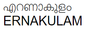

Ernakulam bordering the district of Thrissur in the north, Idukki in the East, Alapuzha and Kottayam in the south, Lakshadweep Sea in the west is an amalgam of a hoary heritage and global growth of industry and commerce. For the outside world, Ernakulam is part of Kochi referred to in the history of Kerala as the Queen of Arabian Sea. The densely populated Ernakulam District embodies the achievements of the Kerala State in literacy, industry, trade and commerce. With an inclusive culture, relatively high per capita income and an unstoppable interest of the people in updating themselves of the political, economic, social and cultural happenings in the national and international spheres, Ernakulam represents the high modern phase of the Kerala society.